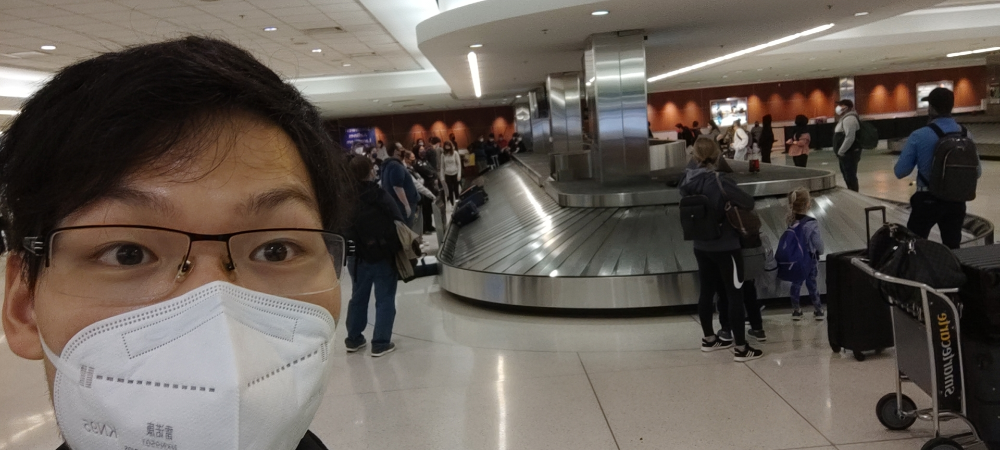
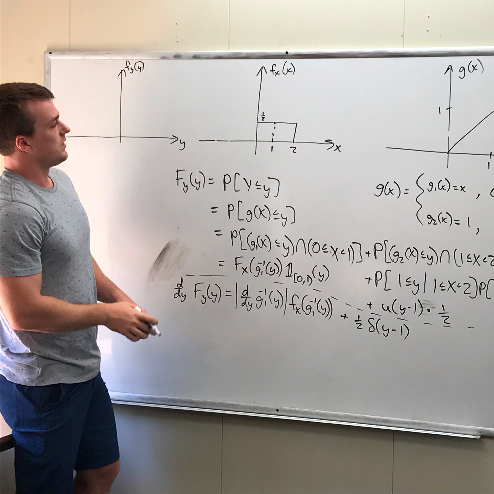
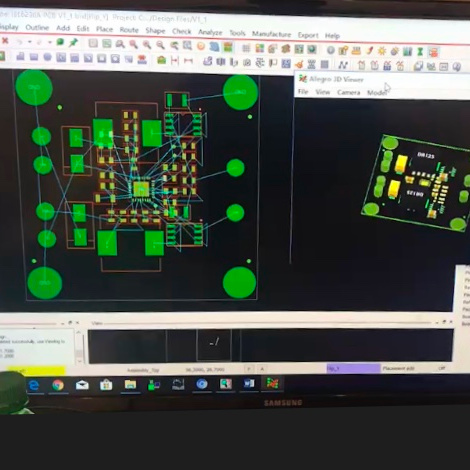
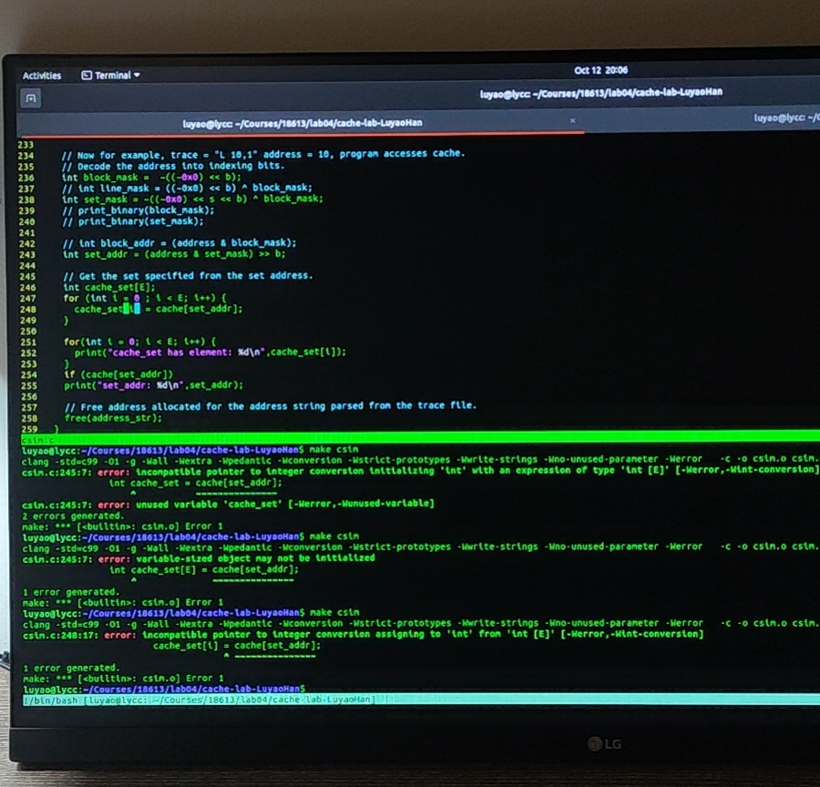
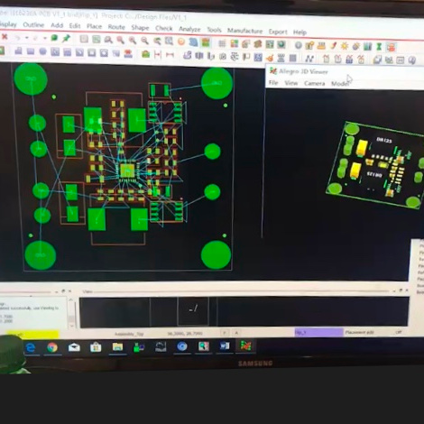
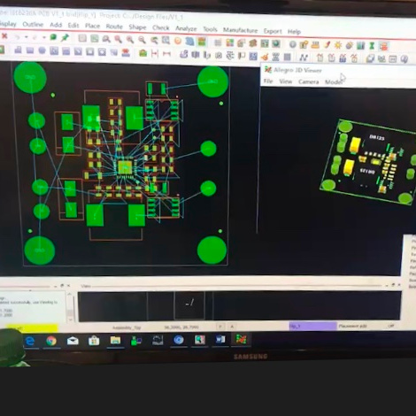
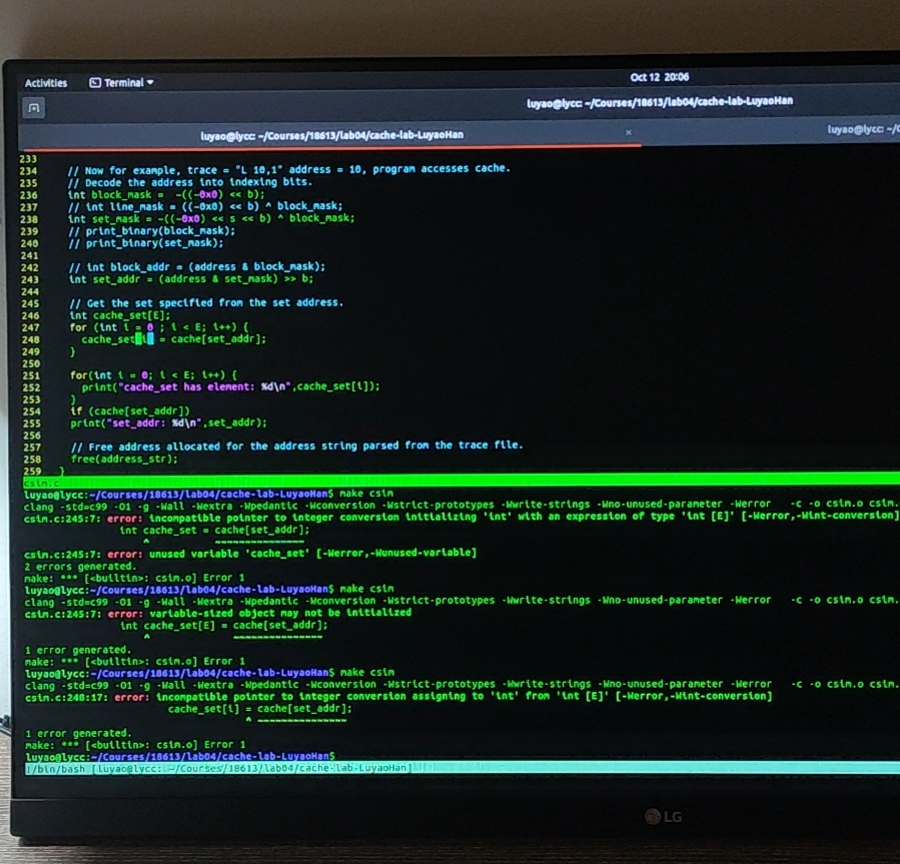
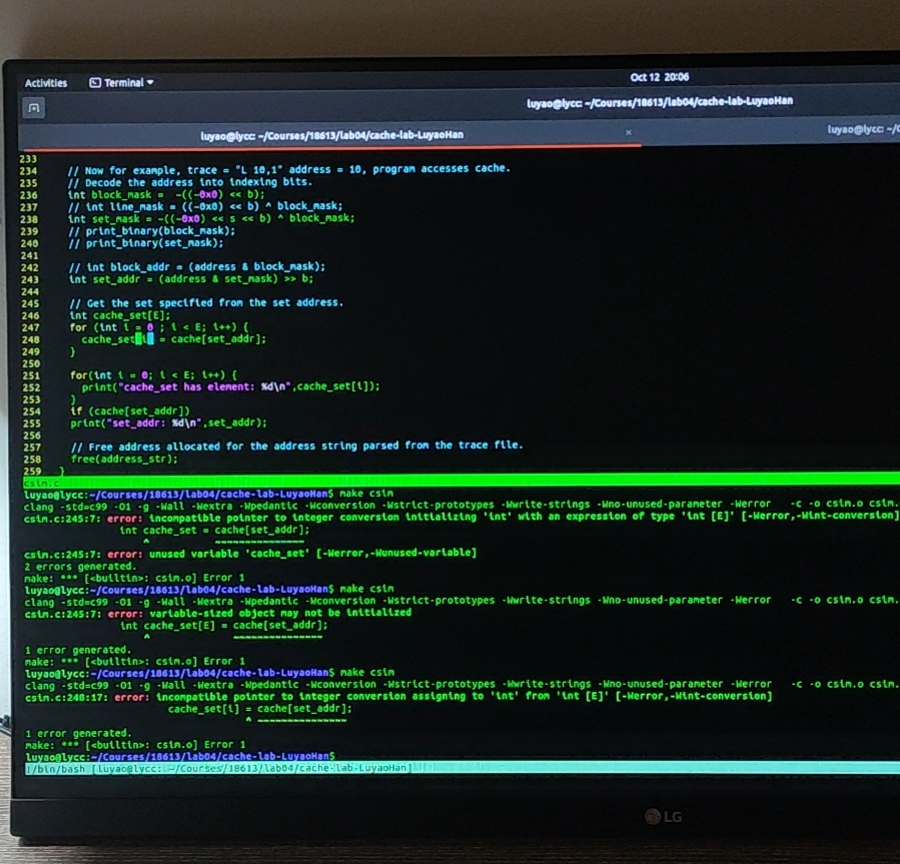

In 1999, I was born in Hangzhou, a city in East China.
After witnessing the economic rise, the country soon pivoted its development around first-tier cities.
My family had decided to move to the city of Shanghai to seek better financial opportunities and educational resources for their beloved children.
My story began from here.
Teenage
December 16th, 2013, I got an admission letter from an international school that offered equivalent high school curricula as those in the United States.
After some thoughtful discussions, my family and I decided that I shall pursue the journey.
That said, I needed to earn a high school education enough to prepare for a U.S. college, deviating from what an average student would experience at my age, and would take a path for higher education far away from home.
I was proud that I had qualified as one of the few students who had done well in the qualification exam.
A Different Life Trajectory
High school was fun.
As the school advocated -- "WHERE EAST MEETS WEST."
Halloweens, Secret Santas, Pep Rally, Talent Show, Academic Debate, Theaters Arts -- numerous activities opened my eyes to the western world.
I truly appreciated such an interesting cultural fusion.
I also got to understand myself better. That, I was an adherent of pragmatism. In hindsight, I realized that the signs manifested as early as then, and I thought and treated my problems like an engineer.
Interestingly, once I programmed the auditorium stage lighting console for an entertaining Talent Show. I liked the sole magic power of machine intelligence.
I tried programming microprocessors and Linux-based computers, though. The technologies were magical to me.
The many virtues and personalities jointly encouraged me to become who I am today.
These qualities are Passion, Grittiness, Resilience, Aspiration, and Curiosity.
They carried me on during tough times and will be precious assets for life.
College, Lots of College Work
September 3rd, 2017, I landed at the Los Angeles Airport.
Four years of exciting experience ahead, my study in the United States had formally begun.

The electrical engineering curriculum at UC Santa Barbara was composed of the lower-division and upper-division course sets.
The lower-division courses were introductory courses to prepare the student for advanced upper-division engineering courses with theoretical foundations.
During my first year, I took Calculus, Differential Equations, Vector Calculus, Problem Solving with C++, and many others.
During my Sophomore year, I enjoyed and probably also hated the "10 Series", a whole year of continuous series for analog and digital circuits systems designs and analysis.
Out of curiosity and with many C programming experiences in the past, I naturally enrolled in other more advanced C++ courses on Data Structures and Algorithms, Object-Oriented Programming, and Software Architectures Courses.
I still recall the many nights I stumbled upon the problems I had faced.


An Engineer
Having realized that my intrinsic curiosity lies in the digital hardware and lower-level software domain, I changed my major from Electrical Engineering to Computer Engineering.
The two majors had ~70% curriculum overlap except that I got to allocate more time to the software side of the engineering spectrum.
In my Junior and Senior years, my curriculum focused on Embedded Systems and Computer Architecture, which interestingly became the solid concentration of my master's study later.
During the course training, the most important qualities I picked up were quickly ramping up onto an unsolved problem, producing an effective strategy incrementally, and gaining confidence from tackling.
When I realized I would no longer be afraid of certain types of problems, it meant I had gone through such cycles so many times and had already gained enough confidence in such areas.

Keep Going
Where do I see myself in the forthcoming future?
At this age, I have already figured out a lot about myself. Overall, I think I did well.
There is already more to be done than to be said.
All the rest of the unknowns, I will be ready for it.


 


 
